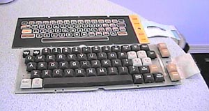

The Atari 400 Keyboard Replacement

Above you see the standard Atari membrane keyboard
which was used on all Atari 400 computer systems and below it is the BKey
replacement keyboard which was a simple plug-in replacement for the membrane
keyboard.